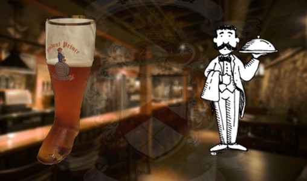

Est. 1990
This Years Pinkel Menu!

Meal
- Pinkelwurst - 2 ways (plain and with kale)
- White Castle
- Spaetzle
- Baked Beans
- Red Cabbage
- Onion Rings
Dinner
Libations
- Spaten Beer
- Burch Beer
- Cactus Juice (Libation of the God's)
Served over ice in "The Green Tupperware Bowl"
- Old fashioned
- Assortment of other beers
Snacks
- Charcoal Grilled Pretzels
- Special German Treat
Foods From The Past
- Stuffed Peppers w/ Ground White Castle
- Nachos
- Cucumbers in garlic sauce
- Galumpkis
- Venison Burritos
- Venison
- Meatballs
- Hot Dogs
- Angel Food Cake